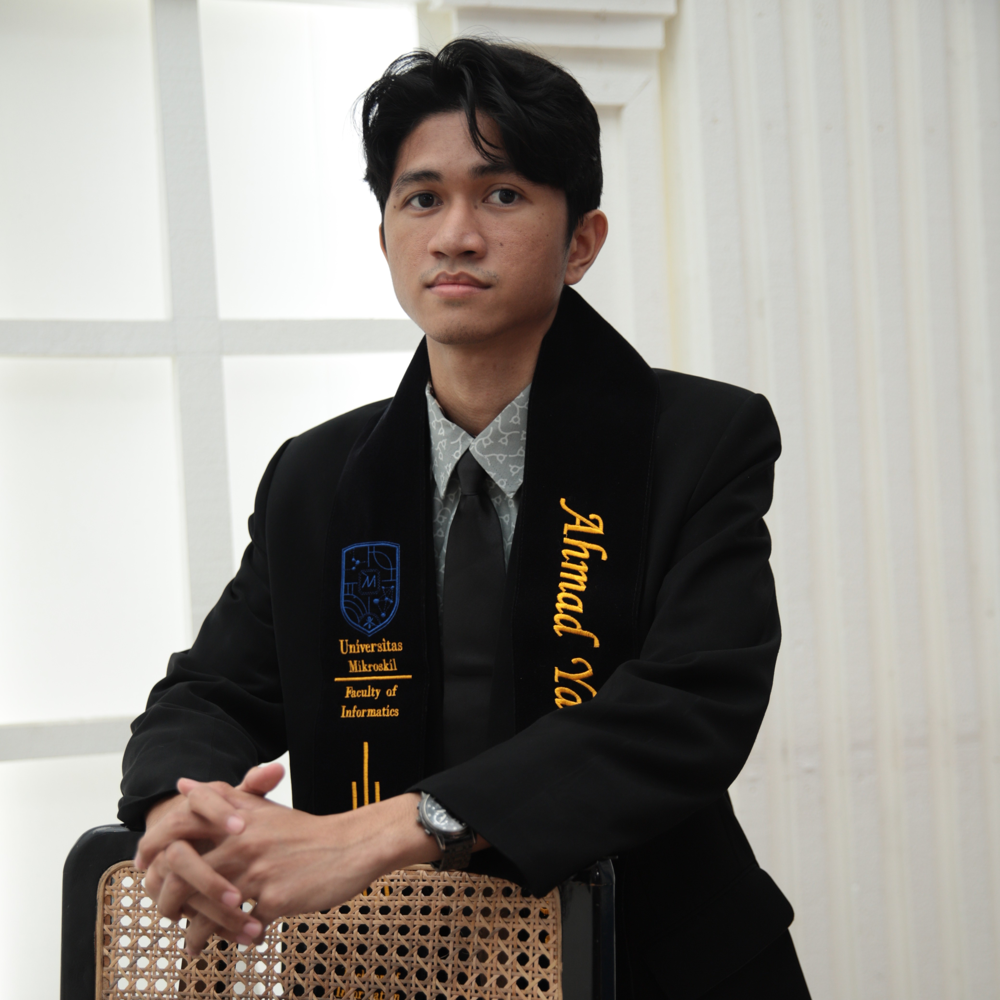
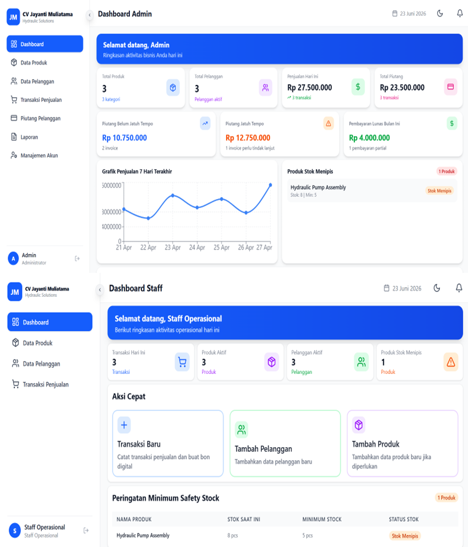

Analisis Kebutuhan
Menggali kebutuhan pengguna dan memahami alur kerja sebelum menentukan solusi.
Business-minded technology professional
Saya Ahmad Yasin Pohan, lulusan S1 Teknologi Informasi yang memadukan pengembangan sistem, pemahaman proses bisnis, dan kreativitas digital untuk merancang solusi yang relevan dengan kebutuhan pengguna dan organisasi.
Core value
Business × Tech

Business
Memahami proses dan kebutuhan bisnis
Technology
Merancang dan membangun solusi digital
Creative Communication
Menyampaikan ide dan pesan secara efektif
Problem Solving
Menganalisis masalah dan mengevaluasi solusi
Tentang saya
Saya merupakan lulusan S1 Teknologi Informasi Universitas Mikroskil dengan minat pada pengembangan sistem digital dan pemecahan masalah. Saya membangun pendekatan lintas bidang dengan menghubungkan fondasi teknologi, pemahaman bisnis, kreativitas, serta kemampuan analitis. Selain perancangan aplikasi dan website, saya juga mempelajari pemasaran, komunikasi, storytelling, desain, dan pengelolaan aktivitas digital.
Pendekatan tersebut membantu saya melihat permasalahan dari beberapa sudut pandang. Saya tertarik menggali kebutuhan melalui komunikasi atau wawancara dengan pengguna dan pihak operasional, memahami alur kerja, mengidentifikasi hambatan, kemudian menerjemahkan temuan tersebut menjadi usulan fitur, tools, atau solusi digital yang relevan.
Bagi saya, teknologi bukan tujuan akhir, melainkan sarana untuk menjawab kebutuhan. Solusi yang baik perlu sesuai dengan proses bisnis, dapat digunakan oleh orang yang membutuhkannya, serta memberikan manfaat yang bisa dievaluasi. Saya ingin terus berkembang pada peran yang menjembatani kebutuhan bisnis dengan penerapan teknologi.
Menggali kebutuhan pengguna dan memahami alur kerja sebelum menentukan solusi.
Menerjemahkan kebutuhan menjadi alur proses, fitur, dan rancangan aplikasi.
Menyampaikan gagasan, menyusun pesan, dan mendukung kebutuhan komunikasi digital.
Mempertimbangkan manfaat, kemudahan implementasi, dan kesesuaian dengan kebutuhan.
Cara saya bekerja
Saya menggabungkan pemahaman bisnis, analisis, komunikasi, dan teknologi dalam satu alur kerja—dari memahami kebutuhan hingga mengevaluasi solusi.
Menggali kebutuhan melalui observasi, komunikasi, dan wawancara.
Memetakan proses, menemukan hambatan, dan menentukan prioritas.
Mengusulkan fitur, tools, atau perbaikan proses yang realistis.
Mewujudkan solusi dan mengomunikasikan cara penggunaannya.
Menguji solusi dan mengevaluasi manfaat berdasarkan hasil yang terukur.
Kompetensi
Saya menghubungkan empat area kompetensi: pemahaman bisnis, pengembangan teknologi, komunikasi kreatif, serta analisis dan pemecahan masalah. Keahlian lintas bidang bukan berarti mengklaim sebagai ahli di semua area, melainkan mampu memanfaatkan perspektif yang berbeda secara terpadu untuk memahami kebutuhan dan merancang solusi.
Memahami proses, tujuan, dan kebutuhan organisasi
Melihat pekerjaan dari sudut pandang operasional dan bisnis, serta memahami bagaimana strategi dan proses kerja memengaruhi kebutuhan solusi.
Menerjemahkan kebutuhan menjadi sistem dan tools
Menggunakan teknologi untuk merancang aplikasi, mengelola data, dan mendukung proses kerja melalui solusi digital.
Stack Laravel 12, React, Inertia.js, MySQL, dan Tailwind CSS digunakan pada proyek CV Jayanti. Cantumkan teknologi lain sesuai tingkat pengalaman dan bukti praktik yang dapat ditunjukkan.
Mengolah ide menjadi pesan dan pengalaman digital
Menggabungkan kreativitas visual dan komunikasi untuk menjelaskan gagasan, membangun pesan, serta mendukung jangkauan digital.
Memahami akar masalah dan mengevaluasi pilihan solusi
Menggunakan pemikiran analitis untuk memahami kebutuhan, memetakan proses, menyusun alternatif, dan menilai kesesuaian solusi.
Catatan: daftar kompetensi mencakup fondasi akademik, pengalaman proyek, dan bidang yang terus dikembangkan. Saat melamar, prioritaskan kemampuan yang paling relevan dengan posisi serta siapkan contoh pekerjaan atau pengalaman untuk mendukungnya.
Selected project
Saya memilih proyek yang memperlihatkan hubungan antara masalah operasional, analisis kebutuhan, dan implementasi teknologi.
CV Jayanti Muliatama
Mencakup rekaman alur sistem & slide presentasi lengkap (OneDrive)
Ringkasan studi kasus
Proyek kolaboratif yang berangkat dari kebutuhan untuk mengelola informasi stok, transaksi penjualan, pembelian, dan piutang secara lebih terstruktur. Sistem dirancang untuk membantu proses operasional dan menyediakan informasi yang mendukung pemantauan bisnis.
Proyek ini memperlihatkan bagaimana kebutuhan operasional dapat diterjemahkan menjadi fitur sistem. Pengujian fungsional dan evaluasi bersama pengguna menjadi bagian dari proses pemeriksaan solusi.



Catatan: proyek dikerjakan secara kolaboratif. Kontribusi di atas merupakan bagian yang saya tangani secara langsung.
Mendukung pencatatan dan penelusuran informasi operasional dalam satu sistem.
Memperhatikan alur transaksi, persediaan, pembayaran, dan kebutuhan pengguna.
Menyediakan informasi untuk pemantauan dan menjadi dasar evaluasi sistem.
Arah kontribusi
Saya terbuka pada kesempatan yang mempertemukan analisis, teknologi, dan kebutuhan organisasi. Penempatan tetap disesuaikan dengan kebutuhan perusahaan dan kualifikasi posisi.
Business Analyst
Menggali kebutuhan, memetakan proses, dan menerjemahkan masalah menjadi kebutuhan solusi.
Digital Transformation
Mengidentifikasi peluang digitalisasi dan perbaikan proses kerja.
IT Planning / MIS
Menghubungkan data, sistem informasi, dan kebutuhan pengelolaan organisasi.
Web / Application Development
Merancang dan mengembangkan aplikasi sesuai kebutuhan pengguna.
Project & Operational Support
Mendukung koordinasi, dokumentasi, komunikasi lintas tim, dan pemantauan pelaksanaan pekerjaan.
Latar belakang
Universitas Mikroskil · Medan
Latar belakang akademik di bidang teknologi informasi menjadi dasar dalam memahami pengembangan sistem, basis data, pemrograman, dan pemanfaatan teknologi untuk mendukung kebutuhan organisasi.
Mari terhubung
Saya terbuka untuk kesempatan magang, proyek kolaboratif, maupun diskusi mengenai pengembangan sistem dan solusi digital untuk kebutuhan bisnis.
Hubungi saya
Silakan hubungi saya untuk kesempatan magang, kolaborasi, atau diskusi mengenai solusi bisnis dan teknologi.